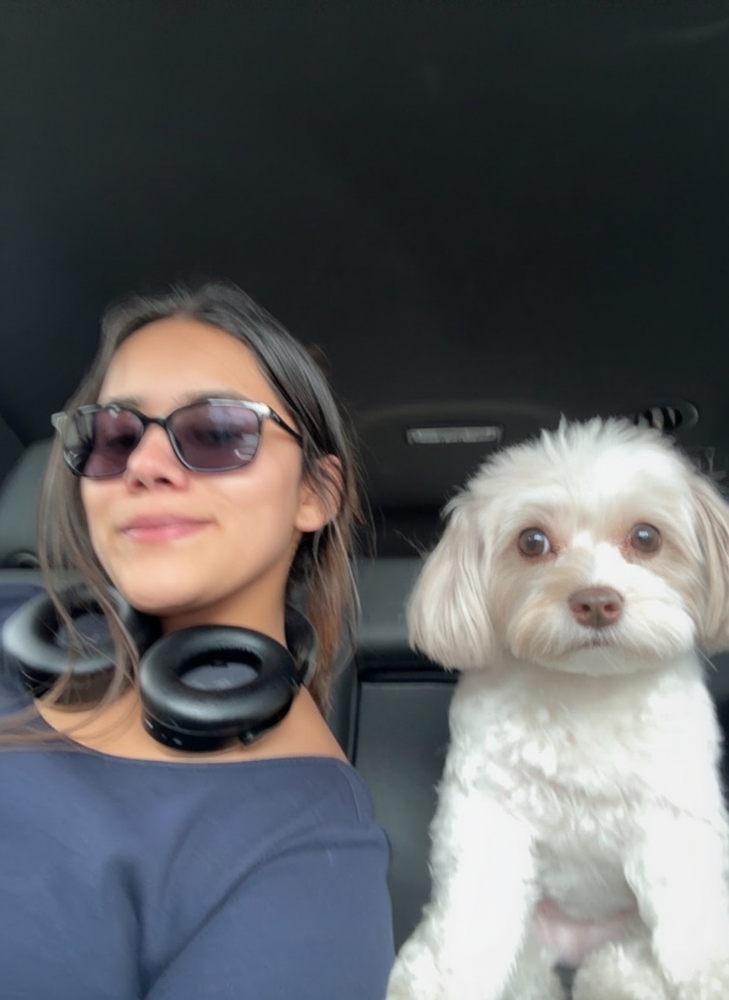

Hi there! I am a math geek. I love poker, heavy metal, Russian literature, fast cars, board and first person shooting games and existential philosophy. I'd like to get into a career in finance (trading or PE). My name literally translates to 'trader' in my native language:)

You can find me on GitHub or reach out via email at shraumare@gmail.com.